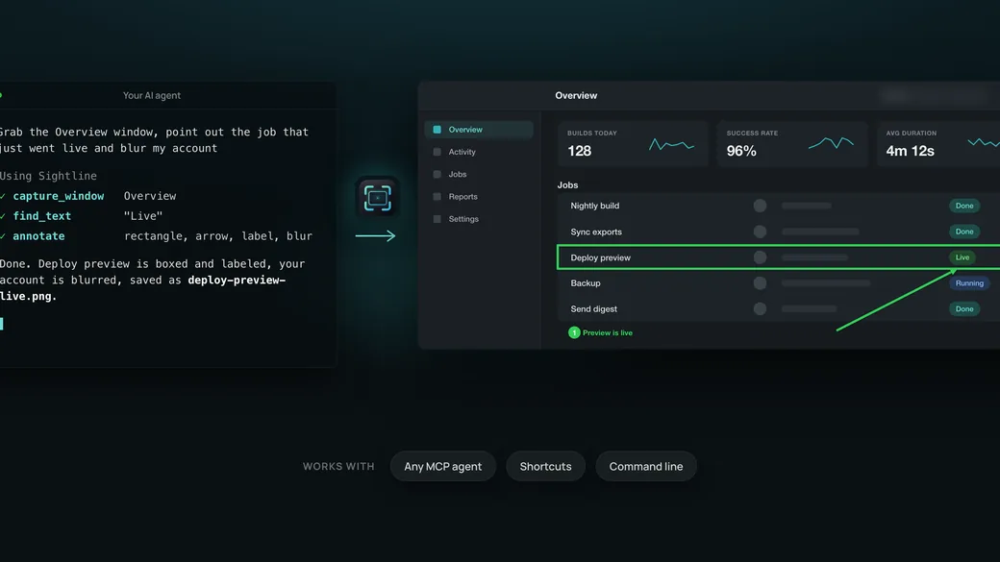

Capture anything
Area, window, full screen, scrolling pages and text straight to the clipboard. The shortcuts you already know.
Screenshots for macOS
A fast screenshot tool with a clean editor, scrolling capture and text recognition, plus a built in MCP server so Claude Code, Claude Desktop and Codex can see your screen when you let them.
Area, window, full screen, scrolling pages and text straight to the clipboard. The shortcuts you already know.
Arrows, shapes, numbered steps, blur and text on a floating toolbar that stays out of the way.
Claude Code, Claude Desktop and Codex can take, read and annotate screenshots through Sightline. You approve each agent, and every action shows a notice. Agentic integration is our top priority: new capabilities ship for agents first.
Twenty-one seconds: capture, scroll and stitch, annotate, and an agent doing the same on request.
Same shortcuts, same thumbnail in the corner, nothing to relearn. Sightline takes over the built in shortcuts and adds the parts that were missing.
| macOS | Sightline | |
|---|---|---|
| ⌘⇧3, ⌘⇧4 and ⌘⇧5, the same shortcuts | macOS | Sightline |
| Area, window and full screen capture | macOS | Sightline |
| Floating thumbnail after each capture | macOS | Sightline |
| Scrolling capture of long pages | macOS | Sightline |
| Text on screen straight to the clipboard | macOS | Sightline |
| Arrows, numbered steps, blur and crop in one editor | macOS | Sightline |
| Light and dark mode, tool names on hover | macOS | Sightline |
| Works with Claude Code, Claude Desktop and Codex | macOS | Sightline |
AI first
Ask in plain words. Your agent lists your windows, captures the right one, finds the text it needs, scroll-captures a long page or marks up the result, all through Sightline. One click in Settings connects it, and each agent asks for your approval the first time.

Sightline checks which app is asking and shows you before anything happens. Allow once, for a session or always. Denials are remembered.
A notice names the agent on each call, and real captures play the shutter sound. Nothing happens silently.
No account, no cloud, no analytics. Screenshots stay in your folder, and the agent connection is local only.